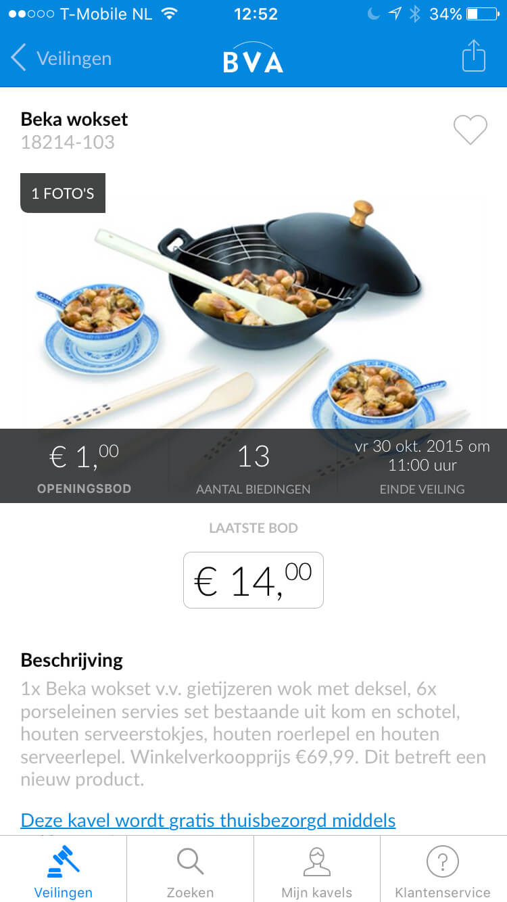
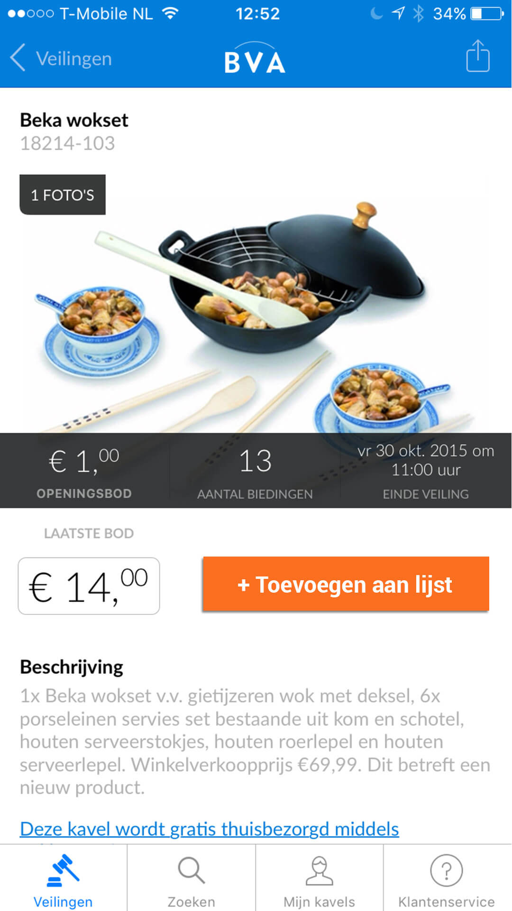

BVA-auctions app & Apple Watch (re)design
Voor deze opdracht heb ik onderdelen van de BVA app op de IPhone, aangepast voor gebruik in combinatie met de Apple Watch. Het ontwerp wat daaruit voorkomt is een verbetering van het huidige ontwerp, geen compleet herontwerp.
Het doel hiervan is om het gebruik en User Experience van de app te verbeteren en om het compatible te maken met de Apple Watch. De redesign is vooral gefocust op het verbeteren van de handelingssnelheid. Dus zowel voor gebruik zonder, als met de Smart Watch moest de ervaring soepeler gaan.
Voor de herontwerp heb ik een interview gehouden met een willekeurig persoon. Het interview was bedoeld om uit te vinden of een “normale” gebruiker plus en/of minpunten ziet op de mobiele app van BVA.
Het was de bedoeling om voor 3 “user stories” een verbetering te maken binnen de app. De user stories zijn:
Voorbeeld van een User Story
De gebruiker kan op zijn iPhone een kavel opslaan, zodat hij op de hoogte van blijft van de start van de veiling
Origineel
Aanpassing
En voor de Smart Watch:
Voorbeeld van een User Story voor Apple Watch:
De gebruiker ontvangt een bericht op zijn Apple Watch, zodat hij weet dat hij kan gaan bieden.
Voorbeelden design pattern


Schets aan de hand van voorbeelden

Hi-fi ontwerp

Voor elk user story heb ik een aantal voorbeelden verzameld van verschillende design patterns. Aandehand van deze voorbeelden heb ik schetsen gemaakt voor de layout van de app. Daarnaa heb ik van de schetsen een hi-fi ontwerp gemaakt voor elke user story.
Het verzamelen van design patterns was zeer nuttig, omdat je overal wel patronen ziet die hetzelfde zijn. Denk aan hamburger menu, swipe om te verwijderen, pinch to zoom. Gebruikers zijn het gewend en daarom wordt het onderling tussen allerlei apps royaal gebruikt.